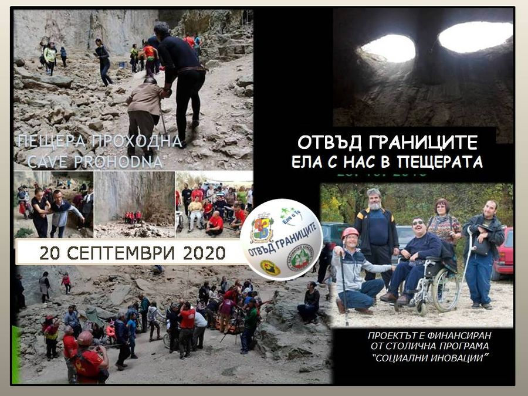

Отвъд границите
Показваме на хора с увреждания места, които без чужда помощ остават недостъпни — пещери, водопади и пътеки.
Научи повече
Показваме на хора с увреждания места, които без чужда помощ остават недостъпни — пещери, водопади и пътеки.
Научи повече
Приключенски посещения на красиви природни забележителности, труднодостъпни или напълно недостъпни за хора с увреждания.
Научи повече
Първият пътеводител, създаден от хора с увреждания — те разказват за местата в София с рисунка, песен и пластика.
Научи повече
Първата карта на адаптиран маршрут за хора в количка — 34 забележителности в София и маршрут, който всеки избира сам.
Научи повече
Един ден, прекаран с човек в неравностойно положение — защото никой не трябва да се чувства самотен и изоставен.
Научи повечеКампания в подкрепа на дейността на фондацията около Деня на детето — 1 юни.
Научи повечеСладка и топла среща за Щедрия вторник — за всяка чаша горещ шоколад правите дарение.
Научи повечеМрежа от обучени доброволци, които помагат на хора с увреждания в ежедневните им нужди — пазар, лекар, разходка.
Научи повечеРожден ден сред природата за трудно подвижен или напълно неподвижен приятел — ден, който да остане паметен.
Научи повече